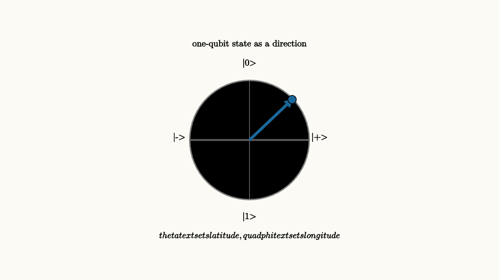

A normalized qubit has two complex amplitudes, but some of that information is physically redundant. Multiplying the whole state by a global phase changes no measurement probabilities. After removing that extra phase, every pure one-qubit state can be represented as a point on a sphere.
One common form is
The angles $\theta$ and $\phi$ locate a point on the Bloch sphere. The north pole is $|0\rangle$. The south pole is $|1\rangle$. Points on the equator are equal-probability superpositions with different relative phases.
The half-angle in the formula is worth noticing. Moving from the north pole to the south pole changes $\theta$ from $0$ to $\pi$, while the amplitude on $|0\rangle$ changes from $\cos 0$ to $\cos(\pi/2)$. The geometry on the sphere is a cleaned-up picture of the underlying two-component complex vector. It removes the global phase and keeps exactly the information that can affect measurement and interference.

source
background = [0.985, 0.98, 0.955, 1]
camera = Camera(4.8b)
mesh sphere = block {
. stroke{GRAY, 2} center{[0, 0, 0]} Circle(1.15)
. stroke{GRAY, 1} center{[0, 0, 0]} Rect([2.3, 0.02])
. stroke{GRAY, 1} Line(start: [0, -1.15, 0], end: [0, 1.15, 0])
. color{BLUE} Arrow(start: [0, 0, 0], end: [0.82, 0.78, 0])
. fill{BLUE} center{[0.82, 0.78, 0]} Circle(0.08)
. center{[0, 1.48, 0]} Text("|0>", 0.62)
. center{[0, -1.48, 0]} Text("|1>", 0.62)
. center{[1.35, 0.05, 0]} Text("|+>", 0.62)
. center{[-1.35, 0.05, 0]} Text("|->", 0.62)
. center{[0, 1.85, 0]} Text("one-qubit state as a direction", 0.62)
. center{[0, -1.85, 0]} Tex("\\theta \\text{ sets latitude},\\quad \\phi \\text{ sets longitude}", 0.60)
}
"bloch sphere"
play Fade(0.7)The sphere is a map of states. It helps because many one-qubit gates become rotations. The Pauli $X$ gate flips north and south, like a half-turn around the horizontal axis. The $Z$ gate changes relative phase, which rotates equator states around the vertical axis. The Hadamard gate swaps the computational and plus-minus axes, moving $|0\rangle$ to $|+\rangle$ and $|1\rangle$ to $|-\rangle$.
This geometry gives a quick diagnostic for circuits. If a state lies near the north pole, measuring in the computational basis will probably return $0$. If it lies on the equator, computational-basis measurement is balanced, and the useful information may live in longitude. A later gate must convert that longitude into latitude if the final measurement reads $0$ and $1$.
Phase lives around the equator
The states
and
both give a 50 percent chance of measuring $0$ in the computational basis. They differ by relative phase. On the Bloch sphere, that phase is visible as a different equator direction.
This is why a qubit cannot be understood by listing only the probabilities of $0$ and $1$. Those probabilities determine latitude. Relative phase determines longitude. Gates can rotate longitude into latitude, making phase visible to measurement later.
source
param phi = 0.0
background = [0.985, 0.98, 0.955, 1]
camera = Camera(4.8b)
let Bloch = |phi| block {
. stroke{GRAY, 2} center{[0, 0, 0]} Circle(1.12)
. stroke{GRAY, 1} Line(start: [-1.12, 0, 0], end: [1.12, 0, 0])
. stroke{GRAY, 1} Line(start: [0, -1.12, 0], end: [0, 1.12, 0])
. color{ORANGE} Arrow(start: [0, 0, 0], end: [1.02 * cos(phi), 0.48 * sin(phi), 0])
. fill{ORANGE} center{[1.02 * cos(phi), 0.48 * sin(phi), 0]} Circle(0.08)
. center{[0, 1.65, 0]} Text("relative phase moves around the equator", 0.62)
. center{[0, -1.45, 0]} Tex("e^{i\\phi}", 0.74)
}
"phase zero"
mesh scene = Bloch(phi: $phi)
play Fade(0.6)
"phase rotates"
phi = 3.14
scene = Bloch(phi: $phi)
play Lerp(1.2)
"rotate to read"
scene = block {
. center{[0, 1.45, 0]} Text("a basis change can turn longitude into latitude", 0.62)
. stroke{GRAY, 2} center{[-1.15, 0, 0]} Circle(0.82)
. color{ORANGE} Arrow(start: [-1.15, 0, 0], end: [-0.35, 0, 0])
. fill{alpha{0.16} GREEN} stroke{GREEN, 3} center{[0.2, 0, 0]} Rect([0.55, 0.46])
. center{[0.2, 0, 0]} Text("H", 0.62)
. stroke{GRAY, 2} center{[1.25, 0, 0]} Circle(0.82)
. color{ORANGE} Arrow(start: [1.25, 0, 0], end: [1.25, 0.76, 0])
. center{[0, -1.25, 0]} Text("geometry predicts which basis measurement should use", 0.62)
}
play Trans(1.0)The flattened ellipse in the scene stands for the equator in perspective. The important motion is around the equator, where measurement probabilities in the $|0\rangle, |1\rangle$ basis stay balanced while phase changes.
The Bloch sphere has limits. It draws one pure qubit beautifully. Two arbitrary qubits require a larger space, because the state can contain entanglement. Mixed states live inside the ball, with noise moving states inward from the surface. Still, for learning gates, bases, and phase, it is one of the best maps available.
The sphere is especially helpful when reading a circuit backward. Suppose the final measurement reads $0$ with high probability. On the sphere, that means the state ended near the north pole. The useful question becomes: which rotations moved it there? A Hadamard may have turned an equator direction into a pole. A phase gate may have moved the point around the equator before that. This backward view often makes a one-qubit circuit feel like navigation rather than algebra.
The lesson to keep
The Bloch sphere turns a one-qubit state into geometry. Latitude controls computational-basis probabilities. Longitude controls relative phase. One-qubit gates act as rotations, so gate design can be read as moving a point to a place where measurement asks the right question.